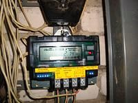
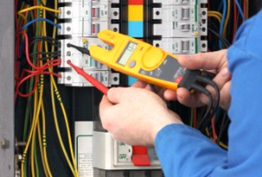
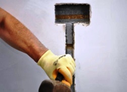

Качественный электромонтаж в Санкт-Петербурге и ленобласти, стаж 12 лет. Частный электрик, недорого и качественно.
Тел. 8 904 642 08 57 Николай.

Перенос электросчетчика в квартире от частного электрика.
Нередко возникают ситуации, когда требуется перенос электросчетчика в квартире. Это очень ответственное мероприятие, которое может выполнить только профессионал. Если вы проживаете в СПБ, можете обратиться ко мне. Я частный электрик, выполняю большой спектр электротехнических работ. Обратившись ко мне по указанному телефону, вы сможете получить консультации по поводу предстоящих работ и вызвать электрика на дом.
В каких случаях возникает вопрос по поводу переноса электросчетчика в квартире.
Причины для переноса или замены счетчика учета потребляемой энергии могут быть разными. Нередко при въезде в новую квартиру жильцы обнаруживают, что старый счетчик в прихожей не позволяет поставить новую мебель. Принимается решение о переносе электросчетчика на другую стенку в пределах прихожей или вынос его в тамбур или подъезд.
В многоквартирных домах может быть два вида установки счетчиков электроэнергии – в квартире и на лестничной площадке. Жители неблагополучных домов с незакрывающимися подъездами нередко принимают решение о переносе электросчетчика в квартиру с лестничной площадки для того, чтобы обезопасить себя от хищения вводных автоматов и самих приборов. Переносят как автоматы, так и сам счетчик.
Важной, не требующей отлагательства в решении, причиной может стать поломка электросчетчика. Прибор отправляется на экспертизу. Замену и переустановку неисправного счетчика может осуществить энергосберегающая организация. Если жильцы решили заменить старую модель на более современную, они по собственной инициативе могут вызвать электрика, который поможет в выборе качественного прибора и установит его в соответствии с существующими правилами.
Во многих домах до сих пор установлены индукционные приборы учета электроэнергии, выпущенные еще в 50–80-х годах прошлого века, в то время как давно уже появились более современные электронные модели. Даже если не требуется перенос электросчетчика в квартире, его нередко заменяют на электронный. Такая замена обусловлена не только физическим износом прибора, но и его громоздкостью, и непривлекательностью.
Электронные счетчики.
Электронные приборы учета имеют привлекательный внешний вид, компактные размеры. Они обладают более низким классом погрешности (до 1%). Такие счетчики позволяют перейти на многоуровневый тариф, что экономически выгодно. Электронные приборы бывают с жидкокристаллическим дисплеем или же с привычным цифровым барабаном.
Электрощиток может представлять собой пластмассовую коробку с дверцей из оргстекла. В нем устанавливается сам счетчик и автоматы защиты. Менее удобной является конструкция металлического щитка. Такой бокс проигрывает пластмассовому в удобстве монтажа в нем счетчика и его дальнейшему обслуживанию. По способу установки щиток может быть внешним (навесным) и внутренним (встраиваемым в стенку).
Варианты переноса электросчетчика.
Электрощитки, встречающиеся в старых домах, могут, кроме счетчика с пробками, иметь еще выключатель, розетку, патрон для лампочки, электрический звонок. Если осуществляется перенос электросчетчика в квартире, его посещают в бокс, а все перечисленные приборы, по желанию заказчика, устанавливают в указанном им месте.
Если счетчик переносится на небольшое расстояние, выполнить перенос можно без распломбировки и вызова представителей Энергонадзора. Главное – не отсоединять провода от прибора и случайно не сорвать пломбу.
Такую тонкую работу может осуществить только профессионал.
Можно перенос осуществить двумя путями:
- в квартиру переместить автоматы защиты, а счетчик оставить на месте;
- или перенести автоматы вместе со счетчиком.
Преимущества переноса электросчетчика в квартиру заключаются еще и в том, что ограничивается доступ к нему и автоматам посторонних лиц, случайно или преднамеренно могущих отключить электричество в вашем помещении. Если квартиросъемщик после переноса в квартиру счетчика в дальнейшем пожелает полностью заменить электропроводку, ему не придется для этого вести провода на лестничную площадку.
Требования, выдвигаемые государственными органами по поводу установки счетчиков.
Согласно Правилам устройства электроустановок (ПУЭ) места размещения счетчиков должны быть легкодоступными. В помещениях, где они устанавливаются, должно быть сухо, температура в зимний период не должна быть отрицательной. Электросчетчики должны устанавливаться на жестких конструкциях – панелях, щитах, стенах. Щиты могут быть металлическими или пластмассовыми, допускаются и деревянные, но последний вариант является устаревшим и не отвечающим нормам пожарной безопасности.
Крепится счетчик строго вертикально, отклонение допускается не более 1 градуса, поэтому точность установки рекомендуется проверять профессиональным уровнем. Осуществляя перенос электросчетчика в квартире,следует учитывать, на какой высоте его можно размещать. Рекомендуемая высота размещения электроприбора находится в допустимых пределах от 0,8 до 1,7 м от поверхности пола. Возможно и более низкое размещение, но существует ограничение – не ниже 0,4 м от пола.
Такие ограничения связаны с удобством в обслуживании счетчика и обеспечением доступности для снятия показаний. Место, где установлен счетчик, не должно быть загромождено мебелью и бытовыми предметами. Конструкция креплений должна быть такой, чтобы прибор можно было установить и снять с лицевой стороны.
Какие мероприятия следует выполнить при переносе электросчетчика.
Прежде, чем перенести, заменить или переустановить прибор учета, следует получить разрешение в отделении Энергосбыта. Для этого нужно написать заявление, в котором указать цель и причину переноса, адрес и номер своего телефона. Через определенное время сотрудники отдела свяжутся с вами по телефону и вы договоритесь о времени приезда на осмотр. Приехав на место, специалисты, руководствуясь правилами ПУЭ, оценят, возможен ли перенос электросчетчика в квартире в согласовании с вашими желаниями, и вынесут свой вердикт.
Если принято положительное решение, специалисты могут дать рекомендации по выборе марки нового прибора. Для выполнения работ по переносу счетчика лучше пригласить электрика с опытом, каким, собственно, я и являюсь. Выполняю работы качественно с соблюдением всех норм, правил ПУЭ и требований заказчика.
После установки прибора на новом месте снова вызываются представители Энергонадзора, которые распломбируют старый и опломбируют новый счетчик, о чем будет составлен акт в двух экземплярах. Один из них остается у квартиросъемщика. Услуги работников Энергонадзора следует предварительно оплатить до их визита.
Забота электрика – чтобы хорошо были прикручены провода и все винты в счетчике были плотно затянуты для предотвращения искрения контактов. Заказчик должен внимательно проследить, качественно ли установлена пломба, чтобы не быть обвиненным в несанкционированном хищении электроэнергии. На пломбе пишется номер, который должен быть указан в акте. Написания в акте показаний старого и нового приборов учета. Через несколько недель после переноса электросчетчика в вашей квартире желательно обратиться в отделение, где вы писали заявление, и проверить, зарегистрирован или нет новый прибор.
 Поменять проводку в квартире.
Поменять проводку в квартире. Сколько будут стоить материалы.
Электрика в загородном доме стоимость работ.

Замена электропроводки в панельном доме.
Расценки на электропроводку квартир.
Замена проводки в хрущевке.
Электромонтаж в частном доме.
Электрика в загородном доме.
Сколько стоит замена электропроводки в двухкомнатной квартире?.
Электрик в новостройку однокомнатная квартира недорого.

Сколько стоит поменять электропроводку в 3-х комнатной квартире.